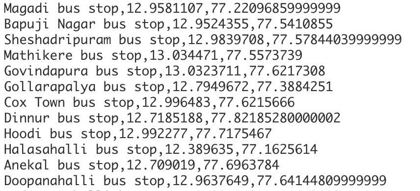
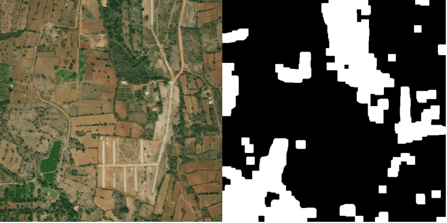
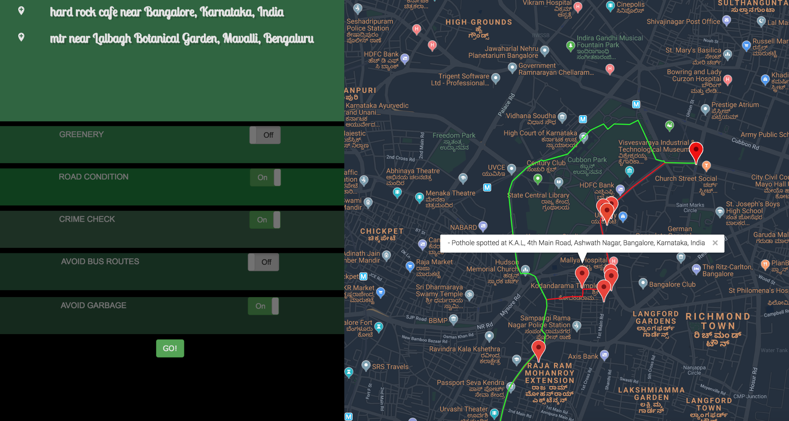

Google Maps suggests a route based on distance and traffic conditions. However, it does not consider the following factors:
Implement an intelligent routing system that suggests the best path based on the following factors:
1. Road conditions (potholes, open manholes, dirty roads, waterlogged roads,etc)
2. Crime Rate (Avoid paths that are known to have a high crime rate during the time of travel)
3. Green routing: Suggest a path that is pleasurable for the driver ; routes that have a good amount of green coverage
1. I change my city : Citizens post complaints pertaining to a wide variety of categories such as garbage, traffic, crimes, and potholes
2. Twitter : Crawled tweets mentioning potholes, Perform NER to recognize location, geocoded the location name to get the coordinates
3. Wikipedia : Extracted bus stop names, geocoded to get coordinates
4. Satellite Imagery : Segmented satellite images to get location of green areas.
a. Data Extraction
Scraped and crawled data using requests and Elasticsearch.
Example: Extracted Bus Information in Bangalore from Wikipedia and geocoded to get coordinates.

b. Satellite Image Segmentation
We used simple image processing techniques to extract a mask of the forest/ canopied areas from a series of satellite images.
Sample Results:

c. REST API
Built a REST API Service on IBM Bluemix. The inputs to the API are the geocoded latitudes and longitude of the location. The API returns a JSON object comprising of the best possible route coordinates.

Check it out: here